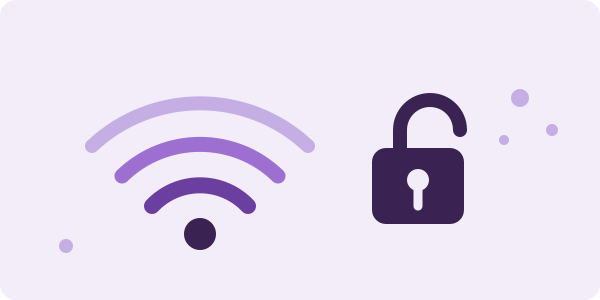
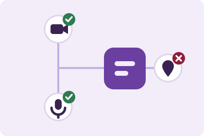

Uno escucha hablar de seguridad digital y se imagina a alguien encapuchado
escribiendo código verde. En la práctica es mucho más aburrido: casi todo
parte por una red abierta, un permiso que se aceptó sin leer o una sesión
que quedó abierta en el computador de la sala.
Este sitio recorre esas situaciones corrientes, las que pasan en un día
cualquiera de liceo, y explica qué hacer en cada una. Nada de programas
especiales ni de saber de computación: son decisiones de diez
segundos que evitan problemas de meses.

Una red abierta es una sala donde cualquiera escucha.
Lo que pasa en un día normal
Te conectas al wifi del liceo
En una red compartida el tráfico viaja por el mismo cable que el de todos.
Para buscar cosas, ver videos o leer, no hay drama. El problema aparece
cuando escribes una contraseña o entras a algo con plata de por medio.
Navega tranquilo, pero deja el banco y las compras para tu casa o los datos móviles.
Un amigo te manda un link raro
Cuando le roban la cuenta a alguien, lo primero que hacen es mandarle el
mismo engaño a toda su lista de contactos. Que venga de un número conocido
no significa nada: significa justamente que a esa persona ya le pasó.
Antes de abrirlo, pregúntale por otro lado si de verdad lo mandó.
Instalas una app y te pide permisos
Esa pantalla que uno acepta sin mirar es la que decide si la aplicación
puede ver tus contactos, prender el micrófono o saber dónde estás. Se
acepta una vez y queda así para siempre.
Léela una vez: si el permiso no tiene nada que ver con lo que hace la app, no lo des.
Ocupas el computador de la sala
Dejar la sesión abierta en un equipo compartido es dejar la puerta sin
llave. El siguiente que se siente entra a tu correo, a tus redes y a tus
trabajos sin tener que adivinar nada.
Cierra sesión antes de pararte, aunque sea por dos minutos.
Las contraseñas, rápido
El largo importa más que los símbolos. Una frase de cuatro palabras que solo
tú entiendas aguanta muchísimo más que ocho caracteres con un signo al final,
porque los ataques automáticos prueban primero lo corto y lo conocido.
Y conviene no repetirlas: si una se filtra, el mismo par de correo y clave se
prueba en todas las demás plataformas. Eso es lo que hace que un problema
chico se convierta en uno grande.
Arma una frase larga, con palabras que no se relacionen entre sí.
Ponle una contraseña única al correo: desde ahí se recupera todo lo demás.
Activa la verificación en dos pasos donde la ofrezcan.
Permisos de una app: ¿tiene sentido?
La regla es simple: el permiso tiene que servirle a la app para hacer lo que
promete. Si no calza, algo más está buscando.
Ejemplos de permisos que piden las aplicaciones
La aplicación
Le pide
¿Calza?
Mapas
Tu ubicación
Calza
Cámara
Cámara y galería de fotos
Calza
Linterna
Tu lista de contactos
Sospechoso
Editor de fotos
Registro de llamadas
Sospechoso
Juego sin conexión
Micrófono siempre activo
No lo necesita

Dos permisos tienen sentido; el tercero sobra.
Costumbres que valen la pena
Ninguna cuesta tiempo una vez que te acostumbras:
Cierra sesión en cualquier equipo que no sea tuyo.
Revisa los permisos de las apps que ya tienes instaladas y quita los que sobren.
Baja aplicaciones solo desde Google Play o la App Store.
Mantén el teléfono y las apps al día con sus actualizaciones.
Deja el celular con bloqueo puesto, sea huella, patrón o clave numérica.
Revisa cada tanto quién te sigue en tus redes.
Desconfía de los links que llegan con apuro, vengan de quien vengan.
Habla con un adulto de confianza si algo en línea te deja incómodo.
Cerrar sesión toma dos segundos y ahorra explicaciones.
Si necesitas ayuda
El Mineduc tiene el sitio
Convivencia para la Ciudadanía, con material sobre ciberacoso y ciudadanía
digital pensado para colegios y liceos: